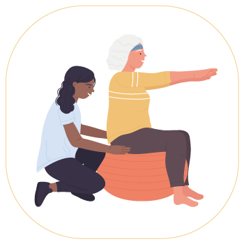
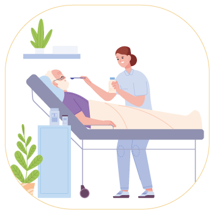
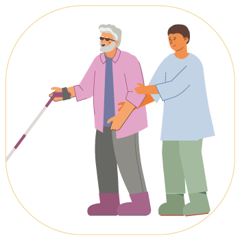

守心服務理念
守護鄰里，心繁家園，安心，放心，同理心
在過去，家庭照顧者承擔了沉重的負擔，且缺乏適當的資源。
守心居家長照在多年前就意識到高齡化社會的來臨
除了提供培訓機會外，致力改善照護工作的專業化和待遇，
並協助家庭照顧者快速找到專業的照顧服務員
同時減輕家庭的負擔，實現更有尊嚴和自主性的生活。
居家服務項目
基本身體清潔
基本日常照顧
測量生命徵象
協助進食或管灌餵食
餐食照顧(一般備餐)
協助沐浴及洗頭
足部照護
到宅沐浴車
翻身拍背

肢體關節活動
協助上(下)樓梯
陪同外出
陪同就醫
家務協助
 代購或代領或代送服務
代購或代領或代送服務

人工氣道管內(非氣管內管)分泌物抽吸
口腔內(戀壅垂之前)分泌物抽吸
尿管及鼻胃管之清潔與固定
血糖機驗血糖
甘油球通便
依指示置入藥盒
安全看視

陪伴服務
巡視服務
協助洗頭
協助排泄
居家喘息服務